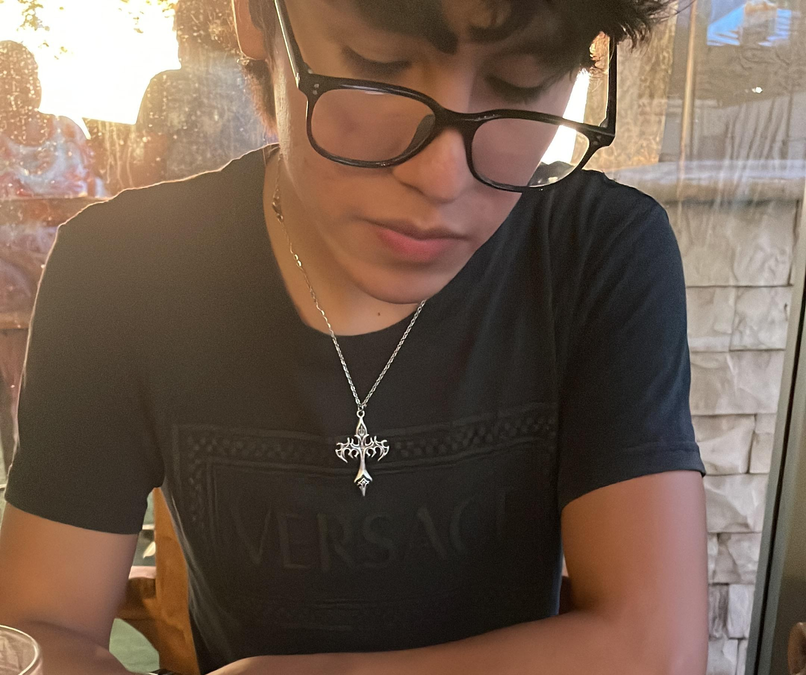

RECUERDO 01
Nuestro primer recuerdo
La primera vez que te vi, caminando hacia mi con tu patineta en las manos y como siempre tus audifonos puestos. Aun me acuerdo de lo guapo que te veias y lo nervisa que estaba ese maravilloso dia💙.